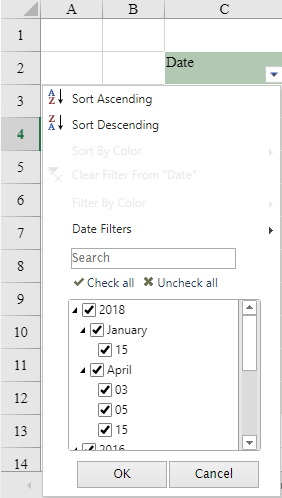
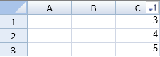

SpreadJS allows users to apply conditional filters (Number filters, Text filters, Date filters, Color filters, Custom Auto) based on the data type of the cells. After the filter operation is performed in a worksheet, the rows that match the filter condition will be displayed and the other rows will be hidden.
A filter button is displayed in the column header for a column that allows filtering. The user can click on the button and select the item they wish to filter by and they can sort the list of items.
You can hide filtered rows. You can also clear the applied filter condition on a column. After you clear the filter, the filtered rows will be shown and the "clear filter" items will be disabled.
If the maximum amount of cells in the filter column are of numeric data type, the number filter will be displayed in the AutoFilterListBox menu. If the maximum amount of cells in the filter column are of text data type, the text filter will be displayed in the AutoFilterListBox menu.
An example of number filter is shown in the below image:
AutoFilterListBox menu for Number filter
The FilterDialog ListBox supports hierarchial tree display. If the maximum amount of cells in the filter column are of date data type, the date filter will be displayed in the AutoFilterListBox menu and the data will be displayed as date tree display. If the filter data contains different kinds of the value type, the filter items will follow a particular order: Date, Number, Text, Logical and Blank, just like in Excel.
In the date tree view, the different hierarchy has a different format policy as explained below:
An example of date filter with a three-level hierarchy (Year-->Month-->Day) is shown in the below image:

You can also apply color filters in the filter columns based on two modes : 1) Filter by Font Color 2) Filter by Cell Background Color. The color filter menu will be enabled when the filtered range has more than one type of cell background colors or font colors.
The users can use the mouse or various keyboard keys to interact with the filter dialog. The Esc key can be used to cancel the dialog. The Tab key can be used to move to different sections and the up and down arrow keys can be used to move in the list of items. The spacebar can be used to change the checked status.

You can create a filter in code with the rowFilter HideRowFilter class. You can hide the filter icon with the filterButtonVisible method.
If the filter range includes outline columns, the hierarchy will be the same in FilterDialog ListBox with outline column data and the filter items checkbox will support the tree status in the way: check, uncheck and indeterminate (the status of the children is not the same). For more information, please refer to Outline Columns.
This example creates a filter.
| JavaScript |
Copy Code
|
|---|---|
| var cellrange =new GC.Spread.Sheets.Range(0, 2, 5, 1); var hideRowFilter =new GC.Spread.Sheets.Filter.HideRowFilter(cellrange); activeSheet.rowFilter(hideRowFilter); //activeSheet.rowFilter(new GC.Spread.Sheets.Filter.HideRowFilter(new GC.Spread.Sheets.Range(0,0,4,4))); |
|
This example filters rows using code.
| JavaScript |
Copy Code
|
|---|---|
|
$(function () { }); |
|
The following code specifies how to apply conditional filters in a worksheet.
| JavaScript |
Copy Code
|
|---|---|
| var spread = new GC.Spread.Sheets.Workbook(document.getElementById("ss")); var sheet = spread.getActiveSheet(); sheet.rowFilter(new GC.Spread.Sheets.Filter.HideRowFilter(new GC.Spread.Sheets.Range(1, 1, 10, 3))); var filter = sheet.rowFilter(); filter.filterDialogVisibleInfo({ sortByValue: false, sortByColor: true, filterByColor: true, filterByValue: true, listFilterArea: false }) |
|
The following code creates a custom filter.
| JavaScript |
Copy Code
|
|---|---|
|
//Create a custom condition. if (value !== null && value >= 10 && value <= 50) { $(function () { $("#button1").click(function(){
|
|